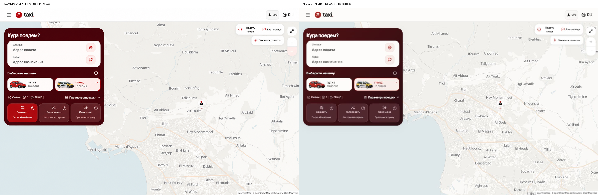
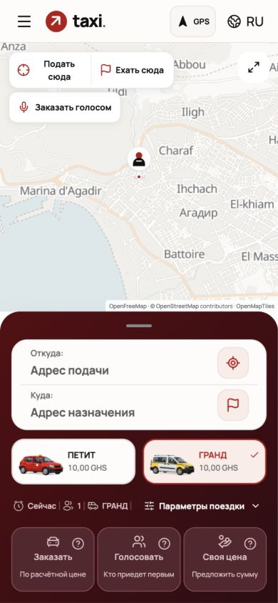
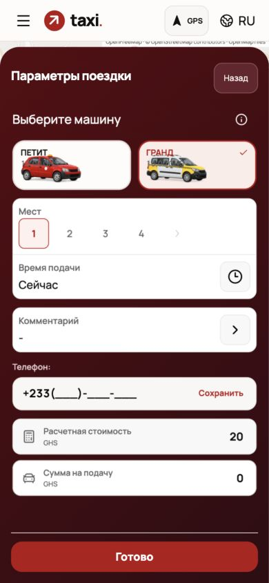
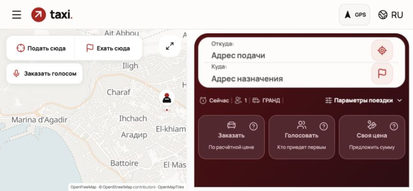
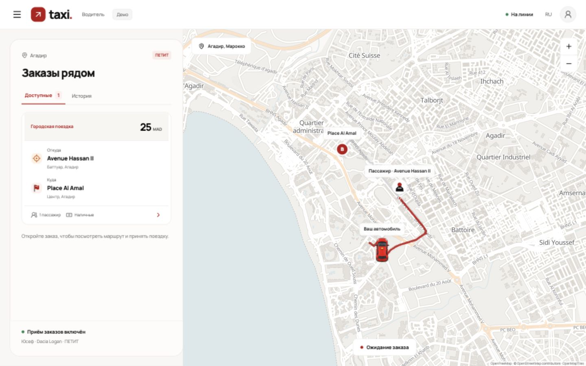
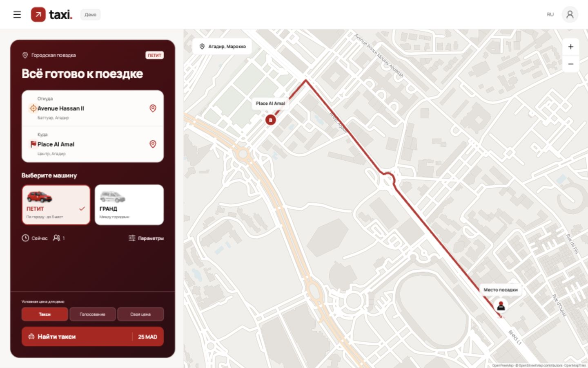

Винная панель, белые поля, алые действия. Manrope, ливреи машин и логика заказов сохранены.
709 тестов, TypeScript, сборка и проверка границ backend прошли. Скриншоты ниже сделаны в браузере; демо и QA используют локальные данные.
Клиент · Водитель · Демо водителя

При пустых адресах команды отключены. В генеративном концепте активная кнопка показана условно.




